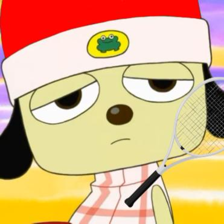

dreamings's adventure: a game
by redstone59
inspired by:
Aullik's Adventure
by Dreaming95, Thycket, and glights
with help from:
and with other stuff by:
Filled Circular Balls, mixkit.co, snayk, Dreaming95, Silent Partner, Twemoji, Steve Berry, PickPik, Color Fun, Vargskethelor Joel, midicities.com, Global Ans, Marc Durst, Laszlo Bencker, John Epping, Scott Wozniak, GDJ, Harper Rey, superawesomevectors
Created over the span of
over a year, with about a month's actual work, a simplistic variety minigame collection for
Dreaming, meant to be for his birthday (if it weren't for
perfectionism).
Contains 7 minigames, 58 achievements, and a 2 hour single playthrough runtime, along with some secret bonus content.
Download here!
Currently on v1.1.0
...and for the nerds, here's the source code.
Changelogs (may contain spoilers!)
v1.1.0 - The Save Data Update
- Critical bug in FDAGT patched! (would update saved level and total score even if you lost)
- Save data system completely overhauled! This should be completely invisible to any players who played on v1.0.0.
- "Unlock All" button added to "danger zone !!" of options menu
- Speedrunners rejoice! Gold splits are now here, along with a completed runs counter beside the attempts counter. Legacy splits should be fine aside from an incorrect completed runs count. To wipe splits & best times, hold S+Ctrl+Delete on the title screen for 5 seconds.
- Bonus content is encrypted better. No extra content added.
v1.0.0 - The Release Update